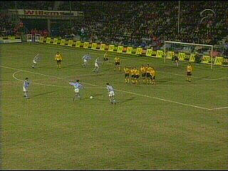
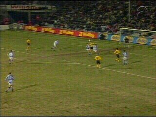
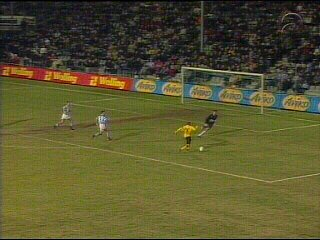

|
De Graafschap - Roda JC (1-1)
|

Na een overtreding van Addo krijgt Graafschap
een vrije trap die door Van Gastel in de 21e min.
verzilverd wordt: 1-0.

Het duurt tot de 55e min. eer Roda een van de
vele kansen weet te benutten. Op een voorzet
van Filipovic kopt Soetaers de bal over de zeer
goed keepende Weevers.

In de slotfase nog een mooie kans voor Cristiano
die helaas overschiet.
Na dit gelijkspel herovert Roda de vierde plaats
in de ranglijst.
© Koempels
Pleasure Dome